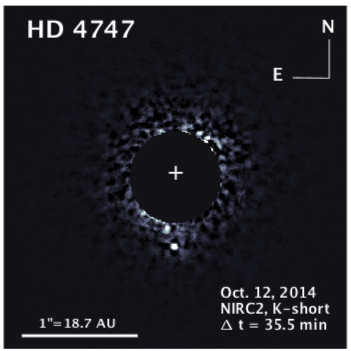

Directly imaging brown dwarfs to test substellar models
Credit: Dr. Justin Crepp My initial research in graduate school was on brown dwarfs. Not a star and not a planet, brown dwarfs are substellar objects between around 13-80 Jupiter masses. They do not ever sustain hydrogen fusion, but they can fuse deuterium, and in some cases, lithium. In order to uniquely characterize a brown dwarf, at least two of its mass, luminosity, and age must be known.
Directly imaging a brown dwarf can break the degeneracies between the mass, luminosity and age. The luminosity can be directly measured from the image, the mass can be calculated from the orbital parameters, and the age is inferred from the age of the star. Therefore, directly imaged brown dwarfs serve as important benchmark objects for substellar evolutionary models. I took new age estimates for two brown dwarfs, HD 4747B and HD 19467B, and compared how various substellar evolutionary models fit the data. The models systematically under-predict the luminosity and therefore over-predict the mass of each brown dwarf. Inclusion of clouds in the models appears to improve the fit.
Collaborators: T. Boyajian, K. von Braun, J. M. Brewer, J. Crepp, G. Schaefer, A. Adams, T. R. White
While two objects are helpful for starting to benchmark substellar models, many more objects are needed for statistical significance. The TRENDS high-contrast imaging survey systematically looked for benchmark brown dwarfs around systems with long-term Doppler accelerations using Keck. Using my MCMC code developed to pull the predicted masses out of the substellar models, I determined the predicted masses of 40+ benchmark objects found through the TRENDS survey.
Collaborators: E. J. Gonzales, J. Crepp, J. A. Johnson, B. Montet
I am not actively involved in any of this research at the moment, although I do keep up with the field and maintain my collaborations.
| Date | Title & Authors | Links |
|---|---|---|
| 04/2020 | The TRENDS High-contrast Imaging Survey. VIII. Compendium of Benchmark Objects E. J. Gonzales, J. R. Crepp, E. B. Bechter, C. M. Wood, et al.; ApJ 893,27 |
[ADS] [arXiv] |
| 03/2019 | Benchmarking Substellar Evolutionary Models Using New Age Estimates for HD 4747 B and HD 19467 B C. M. Wood, T. Boyajian, K. von Braun, et al.; ApJ 873,83 |
[ADS] [arXiv] |
| Date | Location | Type |
|---|---|---|
| 12/2018 | CoSEJAM, University of Notre Dame, South Bend, IN | Contributed talk |
| 10/2018 | AWIS Regional Conference, University of Notre Dame, South Bend, IN | Contributed poster |
| 01/2018 | 231st Meeting of the AAS, Washington, D.C. | Contributed poster |